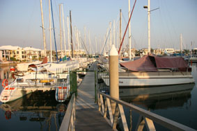
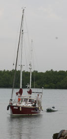
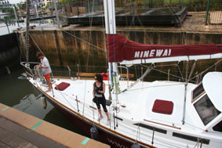
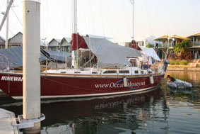
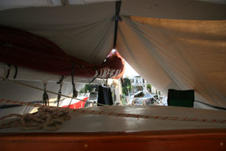
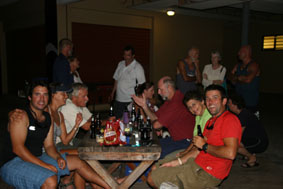
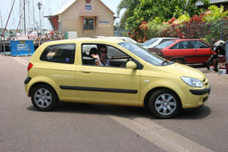

|
|
|
|
|
Darwin II
17th October 2007 Written by Peter
Greetings All,
And a special Happy Birthday to Mum.
I think today is the 3rd month anniversary of arriving in Darwin – and we’re starting to slip into the life-style here. Darwin is part of the Northern Territory, or NT as it is abbreviated. It appears that NT also stands for “Not Today” “Not Tomorrow”– it’s a sort of Aussie version of “mañana” – why do something today or even tomorrow when you can put it off until some other time!
A lot of this is down to the weather. While we are only at the start of the “Build-up” (the season of change between the dry, although still hot winter months, known as "The Dry", and the monsoonal months of “The Wet”), there has been a noticeable increase in the humidity. We’re told, almost on a daily basis, by the locals that this is nothing yet and it will get a lot worse over the next month or so. I don’t know if it could – I literally already have the sweat dripping off me the whole time during the day – the night is a bit better and our greatest fear is that when we’re told it will get worse, they mean the night humidity will go through the roof.
 On the positive side though, we’re back on “Hinewai” who is now moored in Tipperary Waters Marina on the southern side of Darwin. The French boat that was in our berth promised us that they would definitely be gone by the 20th Sept so we were able to promise Julie her flat back that weekend. We should have known – the Frenchies did not go, but promised they would be gone by the following Wednesday. Julie had been so wonderful letting us use the flat but it didn’t seem fair to stay on after we’d committed to leave so we ended up moving into “The Cavanagh”, one of the backpacker hotels in town, for a few days. Basic, but clean, good food, nice bar and a grand air con unit in the room.
On the Wednesday, Jean
popped down to Tipperary to see the French again – “Mais
non” they said, they are still not going. Peter, the marina
manager, then suggested we 
So the next day, Jean
rustled up a few friends and they brought the big girl
round. Now while we are still in the early stages of the
build up, we have had the odd bit of rain – and that
Thursday was the first really big rain we’d seen. About 2”
fell in under an

Once the rain had stopped, I drove round to Tipperary and found a few other yachties to help catch the lines and berth the yacht as she came in.
Four days later, we finally waved fond “Adieu” to the Frenchies and moved the boat to our current berth.
And set about trying to get the big girl set up so we could survive the next few months.
The first job was to get
the air-conditioner installed. This is one of those old
through wall units which we picked up second hand from “Cash
Converters” – the modern Aussie version of a Pawn Shop.
It’s set up on the deck next to the saloon hatch with a
couple of aluminiumised car sun-screens cut up into the
ducting to get the cool air down

Then to get the awnings
up. These are also known as “Boom Tents” since they often

Tipperary is not a bad Marina – based upon an old creek which has been widened, dredged out and developed with houses all around it and a lock to handle the big tides. It has the usual facilities of shore power, loos & showers [only 160 steps to get there – some forethought is handy] and laundry (although the loo and laundrycould be cleaner), but it’s not cheap. Just to park the boat is $405 per 28 day period. Then add $7.50 per day liveaboard charge AND $4.50 per day to run the air-con and we’re soon paying over $900 a month.
Most of the boats moored
here have liveaboards – people who live on their boats. 
Now we are here and settled, we’ve been turning our thoughts to what we’ll do over the next few months.
For me, I’m still a little stuck with the ribs. I have another X-ray on Thursday and will be seeing the Specialist on Friday. Sadly things still don’t feel right – there’s still a horrible clicking feeling inside sometimes and more worrying, there’s still quite a bit of pain when I move carelessly. But hopefully, he’ll OK me to start working again – and even better, OK me to be able to fly again.
Getting a job for either of us is going to be interesting up here. In fact, we are going to have to make a decision about what we want to do.
There’s loads of lower level jobs – bars, hospitality etc – but the pay’s pretty dire. If I were fit, we might look at getting work on one of the mines (they are crying out for drivers etc), but then if I was fit, we wouldn’t be here.
Jean’s actually just finished a two week introductory course on commercial cooking. Since it was free, she did it as much to fill time, but it looks like it may open a few doors to getting “Front of House/Hotel Management” opportunities – and that would be a skill she be able to carry with her around the world. So in some ways it might be a reasonable investment in her time.
Unfortunately, there’s no call for the sort of work we did down south because the market is so small up here – most advertising DM is handled by southern agencies if it’s of any size – indeed, there’s only one ad agency up here. Indeed, in many ways, we’re too qualified to even look for short term work in our field, but we’ve spoken with a couple of employment agencies up here (there are no executive “head-hunter” type organisations) and will let them have our CV’s. (They do love their job titles up here – in last weekend paper, there was a position for a “Director of First Impressions” – reading further, it’s for a receptionist).
Another option is for one of us to head south for a few months and it would make sense for this to be Jean going back to Perth to be with her family as well.
So it’s all a little up in the air at the moment and a little hard to make a decision until I’ve seen the Specialist on Friday.
In the meantime, at least we can get around Darwin more easily now that we have bought a car. This needed another set of decisions. Since we will only need it for a few months, how could we minimise how much we’ll loose on it? Obviously, buying a new car would be daft – we’d drop $3,000 as soon as we drove off the lot, but should we buy a really cheap old car? We might not loose too much on when we sell (or even throw away) but it might cost a bit to keep running or not be very reliable. Or a good second hander?
We spent a week looking
around and ended up buying a 12 month old Hyundai Getz. Its
mileage is quite high at around 30k on the clock, but that
meant it was a lot cheaper at $10,300 than most. Since we
don’t plan to do too many miles, we hope the mileage will
even out when we sell it – and with the Getz being very
popular small car at the 
The downside is that it is bright yellow and while Jean enjoys driving round in her Noddy Car, it’s not doing my street cred too much good.
Buying the car was the easy bit though. Then we had to endure the stupidity of Australia’s State government bureaucracies.
Here we are, two Victorians temporarily living in the NT with no fixed abode (a boat is not considered an abode) trying to transfer ownership of a NT registered car to our Victorian based company. There was that intake of breath and “it’s more than my jobs worth” when we arrived at the RTA office. At first we were told we had to have a registered office in Darwin (and that’s not so). Then that we had to have bank accounts up here (also not so). Eventually, we compromised at providing copies of our company documents proving that we were in fact the directors of the Company (don’t ask me why that was needed) and a bill showing an address in Darwin (The Marina is 80 Frances Bay Road so we fudged that one).
We were relieved that no-one mentioned our Victorian driving licences. Technically, we should surrender our Vic DL’s after 3 months with a car here and get NT licences – at, of course, a cost of $50 each. But we hope we won’t have to worry about this since we’ll both be going interstate before that time is up when we head back to Perth for Xmas and then we’ll start the 3 months again.
But, on the other hand, we’re not able to vote up here. As you may have heard, our poisonous lying git of a PM has finally run out of time and, even with his appalling ratings in the polls, has had to call an election. While the NT is trying to get us to “be” here for the car, with no fixed abode we can’t vote here. So it’s going to be a postal vote back to our old electorate.
No wonder we all pay so much tax trying to support this idiocy of all the levels of Federal, State and Local bureaucracies.
One final observation. There’s very little in the papers or on TV at the moment about the Rugby World Cup. I wonder why after our boys’ magnificent performance a couple of weeks ago (and that magic game against the Frenchies last weekend).
The final next Sunday morning (we’ll be watching about 4am our time) is going to be interesting. Of course, I’ll be supporting Johnny and the other 14 incidentals while young Jean seems to be having a throw back to her darkest Africa days and will be supporting the Boks. We hope our neighbours don’t want to sleep too much that night.
Finally, we’ve just about got the website up to date with news and picccies.
That’s about all for now, so I’ll get this off.
All the best
Peter & Jean
Next Log Page: Darwin Still
|
|
|
|
|
|
|
The Crew The Route The Yacht The Log Guestbook Links Contact Us |
|
|
|
|
|
Home |
|
|
All Original Content of this Web Site Copyright © 2000, 2001, 2002, 2003, 2004, 2005, 2006, 2007, 2008, 2009 Ocean Odyssey Pty Ltd |